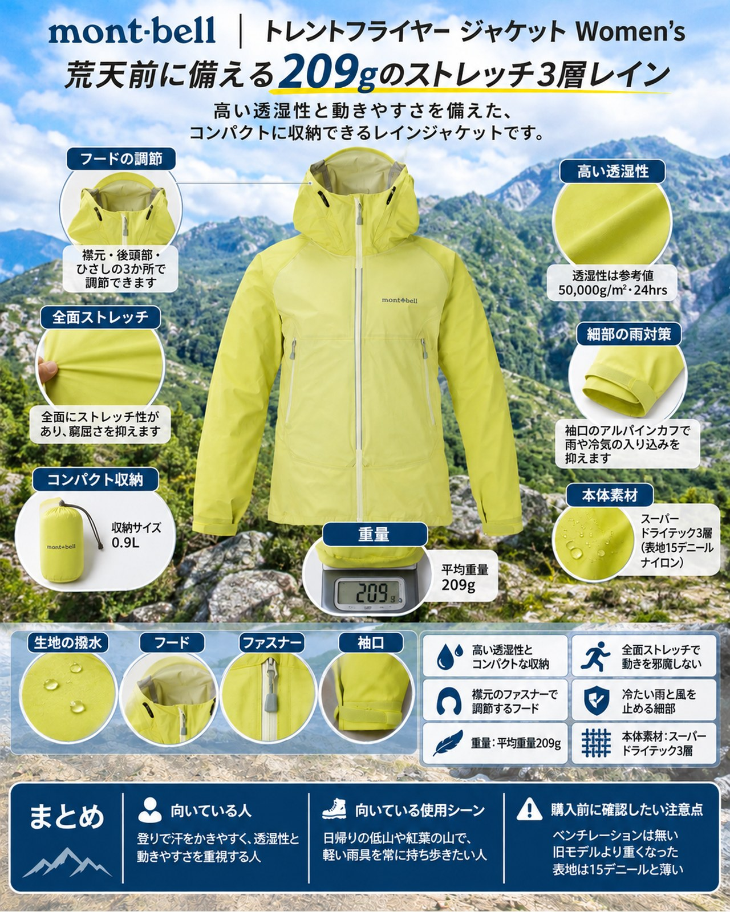

今週は18日（水）に全国的な荒天のおそれがあり、19日からは冬型の気圧配置で山は大雪、平地も急に冷え込む見込みです。上高地は15日に閉山し、北アルプスの小屋も営業を終えました。一方で高尾や六甲などの近郊の低山は紅葉の時期で、週末に歩く人も多いはずです。荒天の前に、レインウェアを見直しておきましょう。
導入：どんな人・どんな山行に向くか
今週は18日（水）に全国的な荒天のおそれがあり、19日からは冬型の気圧配置で山は大雪、平地も急に冷え込む見込みです。上高地は15日に閉山し、北アルプスの小屋も営業を終えました。一方で高尾や六甲などの近郊の低山は紅葉の時期で、週末に歩く人も多いはずです。荒天の前に、レインウェアを見直しておきましょう。
モンベルの「トレントフライヤー ジャケット Women's」（品番 #1128783）は、同社独自の防水透湿素材「スーパー ドライテック」の3レイヤーを使った軽量のレインジャケットです。10月に紹介した定番の「ストームクルーザー」と同じ素材で、軽さと動きやすさに振ったモデルです。登りで汗をかきやすい人、荷物を少しでも軽くしたい人に向く1着です。
基本スペック
| 項目 | 内容 |
|---|---|
| 商品名 | トレントフライヤー ジャケット Women's |
| 品番 | #1128783 |
| 価格 | 24,500円（2026年11月16日時点の表示） |
| 重量 | 平均重量209g |
| 素材 | スーパー ドライテック3層（表地15デニールナイロン） |
| 耐水圧 | 20,000mm以上 |
| 透湿性 | 50,000g/m²・24hrs（JIS L-1099B-1法・参考値） |
| 収納サイズ | 8×8×13cm（0.9L）、スタッフバッグ付き |
| サイズ | XS、S、M、L、XL |
| カラー | ブラック、コーラルピンク、ライトグレー、イエロー |
高い透湿性とコンパクトな収納
透湿性は参考値で50,000g/m²・24hrs、収納すると0.9Lに収まります。平均重量は209gで、耐水圧は20,000mm以上です。ザックに入れっぱなしにしても負担になりにくく、晴れ予報の日でも持っていきやすい重さです。
全面ストレッチで動きを邪魔しない
全面にストレッチ性があり、窮屈さを抑えています。スーパー ドライテックを採用した現行モデルは、独自のパターンと合わせて動きやすさを高めました。段差の大きい登りや、手を使う岩場で腕を上げる場面でも突っ張りにくい作りです。
襟元のファスナーで調節するフード
フードは襟元・後頭部・ひさしの3か所で調節できます。「トライアクスルフード」と呼ばれ、襟元のファスナーで顔まわりを、後頭部のドローコードで奥行きを、後頭部のベルクロでひさしの高さを合わせます。襟元は旧モデルのドローコードから止水ファスナーに変わり、操作しやすくなりました。使わないときはロールアップしてまとめられます。
冷たい雨と風を止める細部
袖口のアルパインカフで、雨や冷気の入り込みを抑えます。袖口は接着加工で水の染み込みを防ぎ、裾も両脇のドローコードで絞れます。ファスナーはアクアテクト®ファスナーで、腰には現行モデルで加わったファスナー付きポケットが2つあります。縫い代を減らす「スマートソーイング」で軽量化し、縫い目はシームテープで防水しています。
デメリット・注意点
- ベンチレーションは無い：脇の通気ファスナーなどの記載はありません。透湿性に頼る作りなので、急登では前のファスナーを開けて調節しましょう。
- 旧モデルより重くなった：メンズで旧モデル186g、現行モデル233gと重くなりました。ストームクルーザーとの重量差は縮まっており、価格差も含めて比べて選ぶ必要があります。
- 表地は15デニールと薄い：軽さと引き換えの薄手の生地です。藪こぎや岩に擦れる場面が多い山行では、扱いに気をつけたほうが安心です。
- ポケットに水が入ることがある：注意書きに、ポケットの内部に水が浸入する場合があると記載されています。濡らしたくない物はポケットに入れないほうが安全です。
- 保温力は無い：薄い防水シェルなので、それ自体は暖かくありません。19日以降の冷え込みには、フリースや化繊インサレーションを下に重ねる前提で考えてください。
向いている人・向いていない人
◎向いている人
- 登りで汗をかきやすく、透湿性と動きやすさを重視する人
- 日帰りの低山や紅葉の山で、軽い雨具を常に持ち歩きたい人
- 女性用のサイズ（XS〜XL）で、体に合うレインジャケットを探している人
△向いていない人
- 脇のベンチレーションで細かく温度調節したい人
- 積雪期の高山や、藪や岩で生地を擦る山行が中心の人
- できるだけ価格を抑えたい人（同じ素材のストームクルーザーも比べてみてください）
まとめ
トレントフライヤー ジャケット Women'sは、スーパー ドライテックの3レイヤーで209gの軽さと、50,000g/m²・24hrs（参考値）の透湿性、全面ストレッチを両立したレインジャケットです。ベンチレーションが無いことや薄手の表地、保温着を重ねる前提であることを理解して選べば、荒天が予想される今週から冬型に変わる時期まで、軽く持ち歩ける頼れる1着になります。
この記事で紹介した商品
価格・重量・在庫は各ブランド公式サイトの記載（確認日つき）にもとづきます。商品を押すと、購入先を選べます。
この記事にはアフィリエイト広告が含まれます。リンク先での購入により、当サイトが報酬を受け取る場合があります。山行の前には、最新の気象とルートの状況を必ずご確認ください。